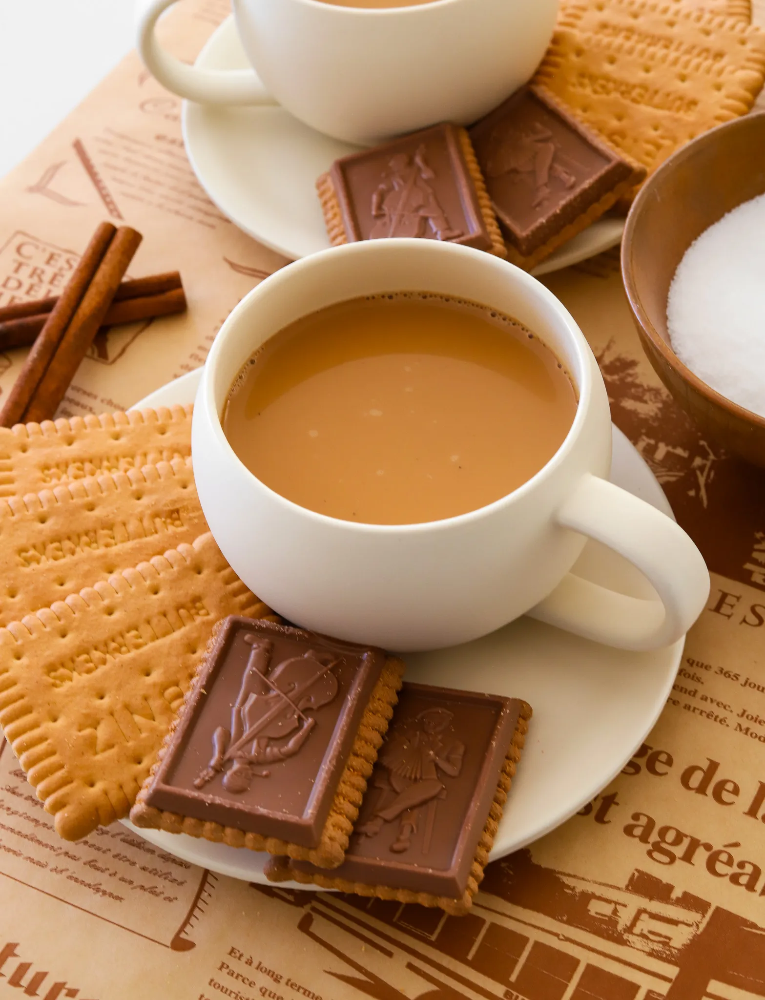

Drinks
KARAK TEA
Prep Time: 5 minutes Cook Time:
15 minutesTotal time: 20 minutes
Yeilds: 4
Creamy, bold, and deeply spiced, karak tea is the Middle Eastern cou
sin of chai, known for its rich flavors and comforting warmth. Infus
ed with cardamom, cinnamon, and ginger, it’s simmered slowly to crea
te a velvety, fragrant cup. Perfect for chilly mornings or whenever
you need a little extra warmth, this tea never disappoints.
Jump to Recipe
Dinner
KARAK TEA
Creamy, bold, and deeply spiced, karak tea is the Middle Eastern
cousin of chai, known for its rich flavors and comforting warmth
. Infused with cardamom, cinnamon, and ginger, it’s simmered slo
wly to create a velvety, fragrant cup. Perfect for chilly mornin
gs or whenever you need a little extra warmth, this tea never di
sappoints.
Prep Time: 5 minutes Cook Time: 15 minutes
Total Time: 4 minutes Yeilds 4
Ingredients
Instructions
-
- Once it starts bubbling, reduce the heat to low and let
it simmer for about 5 to 7 minutes. This allows the spices to in
fuse the milk and water with their rich, warm flavors.
- Place the tea bags into the pot and let them steep for 3 to
5 minutes, depending on how strong you like your tea. Stir o
ccasionally to help the tea blend with the spiced milk. You’
ll know it’s ready when the color turns a deep, caramel brow
n. Stir in the brown sugar until it dissolves completely.
Add the vanilla extract and let it simmer for another minute
to enhance the flavor.
Remove the pot from the heat and carefully strain the tea in
to cups to remove the spices and tea bags.
Serve hot and enjoy!!